Jimbo pulls out a mystery city
So here we are - Colnogne has been ripped apart and we're on the road/rail again. Colnoge has been a great city - once again Germany hasn't let us down as it always follows the rules of providing plenty of good beer and tasty meat snacks on every corner plus plenty to see and do - Germany we salute you.
So we dragged ourselves out of bed late as the german cleaning lady walked with jimbo hanging out all over the place - her look of disgust was soon wiped out when the smell from the room hit her. She's good now as we dropped her 3euro's on our way out.
So we said a tearful goodbye to the Dom and headed for the train station to get to Eindhoven. In true JT fashion it was not a straightforward trip to Eindhoven as we had to change 4 times with only 2 min layovers in some places - if this wasn't germany it could go horribly wrong. Everything went as planned until jimbo got the wrong platform for our final leg so we missed the train - this meant we were stuck in a small dutch town until the next train - this meant we could hit the town for a few beers and a stickerbook game in the sun. We got the train about an hour later after our stop at the mystery city - although no one can remember the name of the town although there is photographic evidence.
So we arrived in Eindhoven in the evening and checked into our hostel. The bloke behind the ramp had 2 speeds - slow and stop - he was more interested in sitting outside smoking and drinking beer - great job!!
The hostel was empty apart from us. so we headed into eindhoven to see what was on offer. Eindhoven is a small town but when you cross the bridge over the small river you hit a 1 mile stretch of bar after bar. The dutch love a night out and some eurotrash with a little bit of karaoeke and a sausage vending machine stuck in there for good measure.
The guy at the hostel told us that the town doesn't get going till 12 so we headed out at round 10 for a dutch night out. On our way out we met a group of round 20 dutch lads on the piss who were moving into our hostel - so much for a quiet hostel!
We headed to the strip and couldn't decide which one of the 50 plus bars to go into so we decided to have a beer in each of them! we also had a game of finger spoof and a photo in each one - don't know why - just did.
The night ended with Stevie going home early and the other lads going up the spinning wheel. No one lost anything serious and jimbo nearly paid for the trip on the way out when he was 1 click from landing the big prize on the wheel of fortune!
So todays our last day. We got up and got dressed (stevie b didn't need to as he was already dressed from last night - boots and all) headed into to town to take in the sites and head for the airport.
Its been a great trip helped by great weather. The questionaire and fearon's first blog are still to come.
As a final note if anyone wants a piece of JT action get in now - as next year JT is going to be on everyone's lips around the world. why i here you ask - because Shaun has in his possession a video which if it is allowed to be uploaded to youtube is gonna be bigger than the 1 pound fish man in queens market!!
JT7 - its gonna be epic!
east
Photographs


{kind=link}
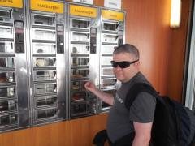
{kind=link}
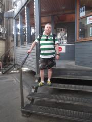
{kind=link}
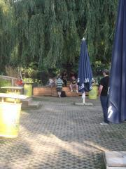
{kind=link}
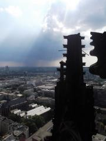
{kind=link}
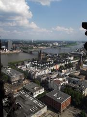
{kind=link}
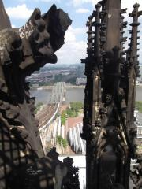
{kind=link}
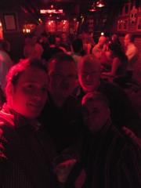
{kind=link}
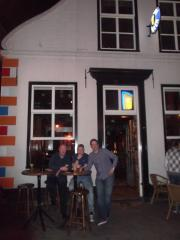
{kind=link}
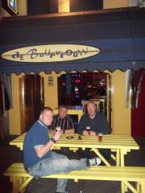
{kind=link}
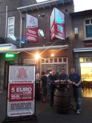
{kind=link}
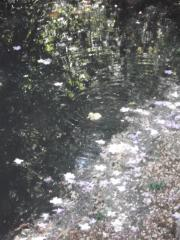